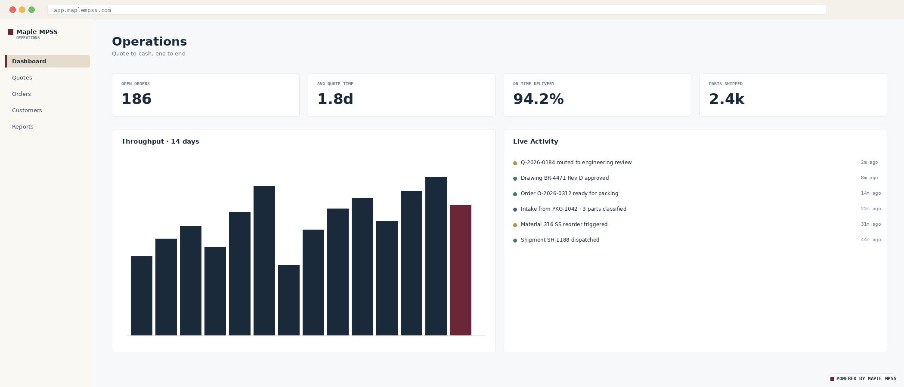
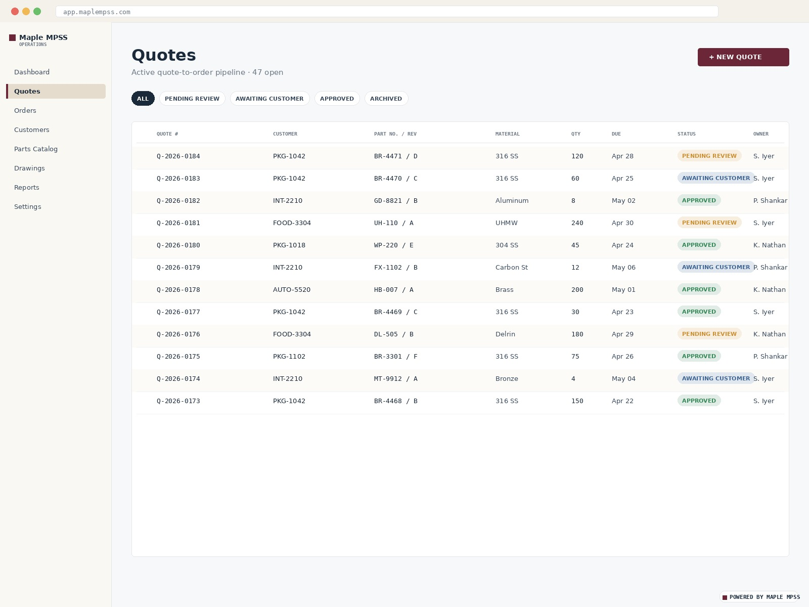
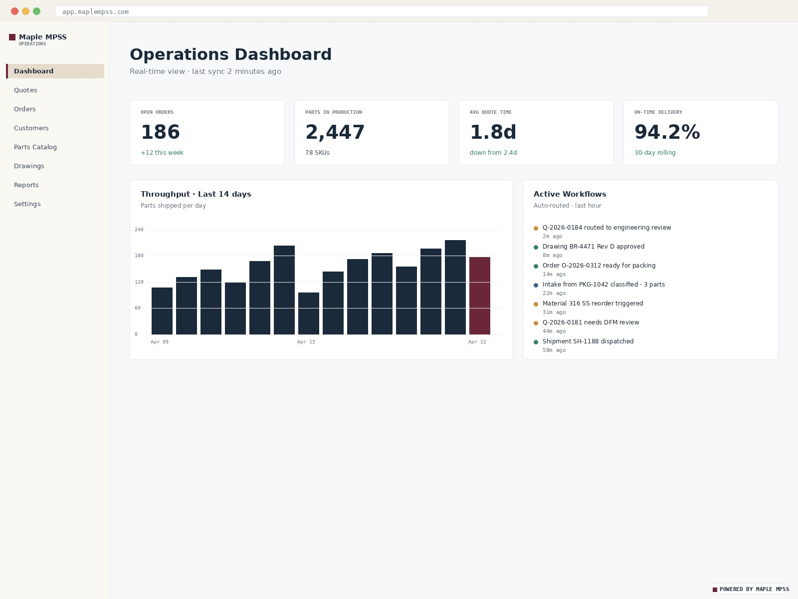
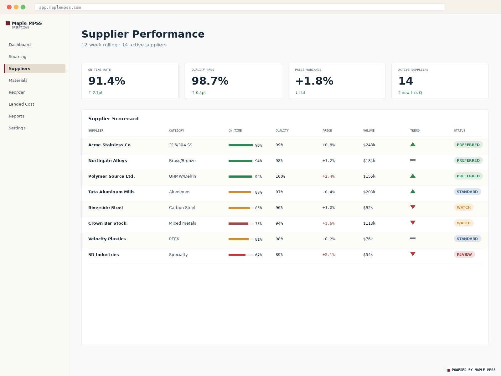
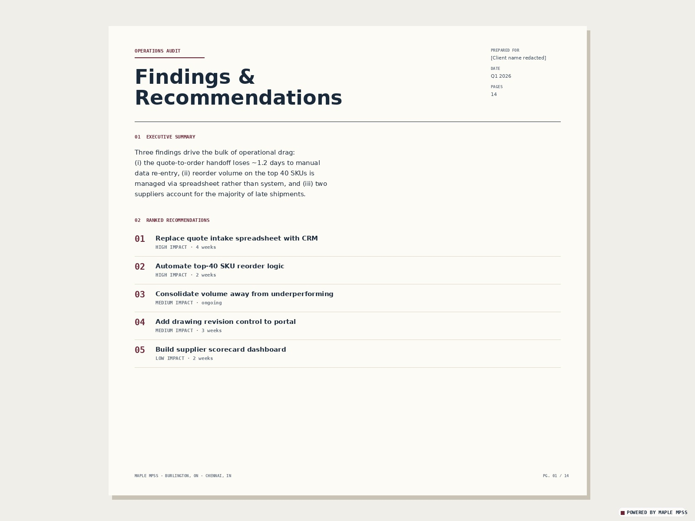
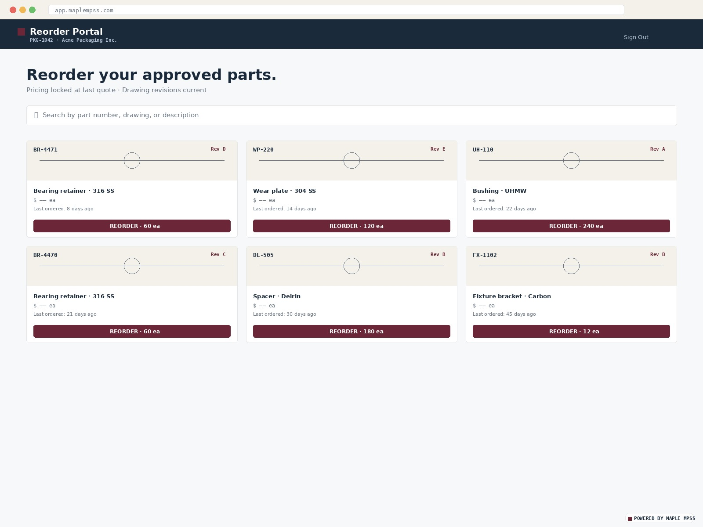

Custom CRM deployments, workflow automation, and supply chain optimisation — built around how your operation actually runs. Most engagements start with a one-week audit so we know what to build before we build it.

Most software built for mid-sized manufacturers fails for one of two reasons: it was built by people who don't know the operation, or it was built by people who know the operation but can't ship software. We sit on both sides. The same firm that would machine your parts is building your portal, your CRM, and your dashboards.
In practice, that means we almost always start with a one-week audit. Software built without seeing the operation is software built on assumptions — and assumptions are where manufacturing software projects die.
Generic CRMs weren't designed for businesses where the unit of work is a part number, a drawing revision, and a quote against a specific customer price list. We build CRMs that are — and connect them to everything else in the quote-to-cash flow.

The places where an operation slows down are rarely where the sales team looks. They're in the handoffs: intake triage, drawing review, quote approvals, expediting, exception handling. That's where LLM agents and well-placed automation pay off — not as novelty, but as quiet infrastructure that removes the friction.

Mid-sized manufacturers usually have more signal in their supply chain than they're using. Supplier performance, reorder patterns, safety stock, obsolescence risk, landed-cost variance — the data is there, but it's sitting across three systems and a spreadsheet. We build the layer that reads across them and surfaces what matters.

One week on site, one written document. We walk the line, read the quote-to-cash flow, and return a briefing document that names what's broken and what's worth fixing. It's the on-ramp to any of the three capabilities above — and it's a standalone engagement when you need an outside read.

Audits run on a fixed scope and a fixed timeline. A brief discovery call sets the focus — what part of the operation to look at, who we should talk to, and what systems we need access to. The document lands within two weeks of fieldwork.
Start with a concrete problem. The sharpest briefs sound like: "Our reorder desk is drowning" or "Every quote takes three days because nobody trusts the margin number" or "We need a customer portal by Q3." We can take it from there.
If the problem is diffuse — "we need to modernize," "something is slow but I can't name it" — start with an audit. One week, one document, and a short list of projects worth doing. Everything else flows from there.

A sharp description of the problem is the fastest way to scope it. If the problem is diffuse, we'll start with an audit. We respond within three business days.
info@maplempss.com · +1 647-671-4516 · Burlington, ON · Chennai, IN